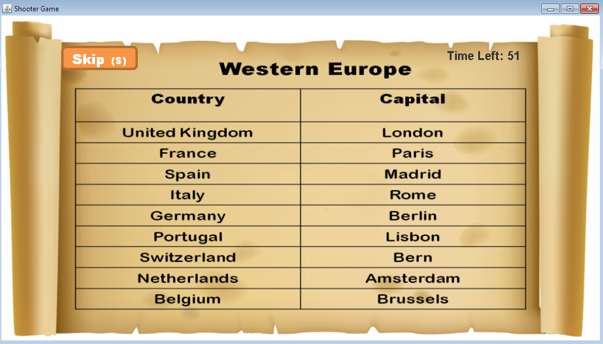

You, as the player, must help our pirate. Each continent in his quest brings a new challenge as the enemy pirates in control of those areas try to stop him. He must destroy every obstacle, be it non-living or human, to pursue his journey.
There is one little problem Asdfg must overcome. Each enemy ship comes from(and represents)a different country. Due to special defence mechanisms, each enemy ship can only be destroyed by being shot with a cannon ball made in the capital of the country it comes from. Fortunately, Asdfg has advanced technology that uses efficient algorithms to quickly determine the country of each ship and displays the country in a small digital screen below the cannon. He also has cannon balls from each of those capitals. However, he must select the correct cannon ball from four different options. These options are shown on the right panel in the game and can be selected using the arrow keys. In summary, he must match the country to the correct capital to be able to shoot and destroy enemy ships.
(see Game controls for more information)
You must help him in doing this. Before the game starts, you will be able to see and memorize the capitals of each country in the current zone (continent) for limited period of time. You must try to memorize as many as possible and use this knowledge in game to help Asdfg select the correct cannon balls.
An example of the capital memorizing screen is shown below:
